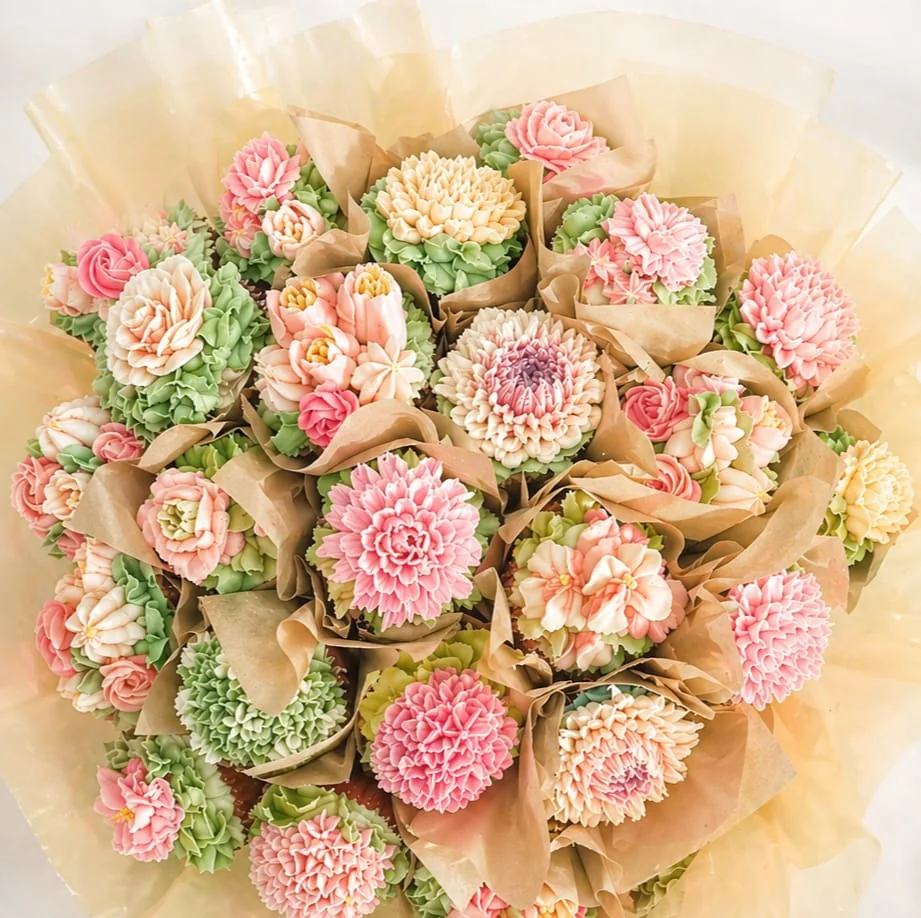
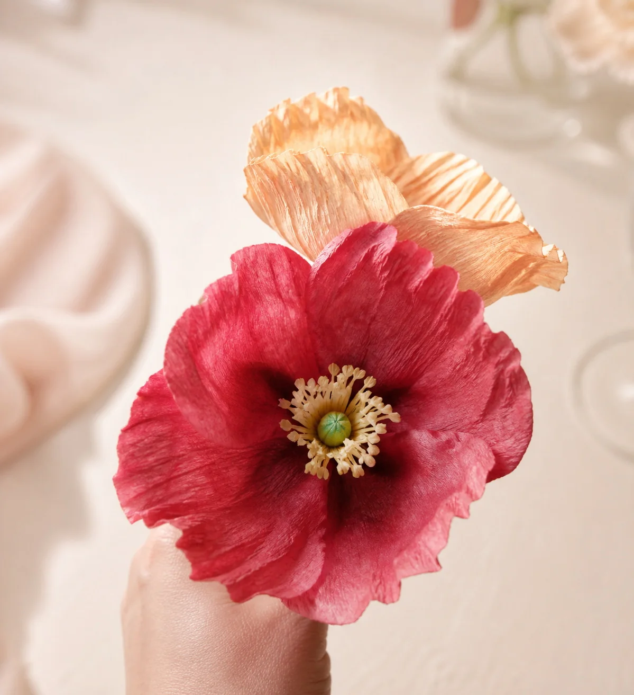
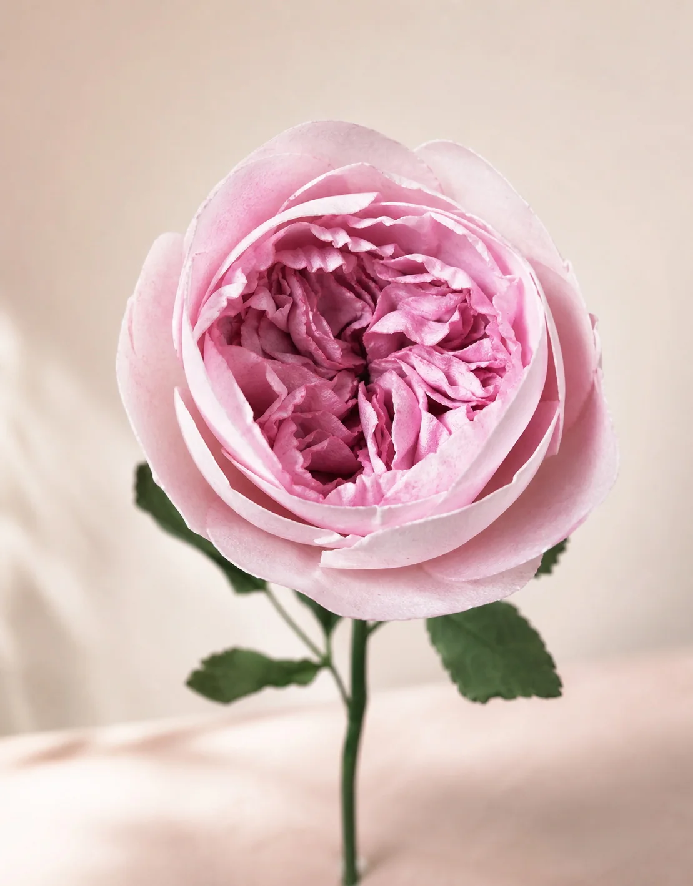
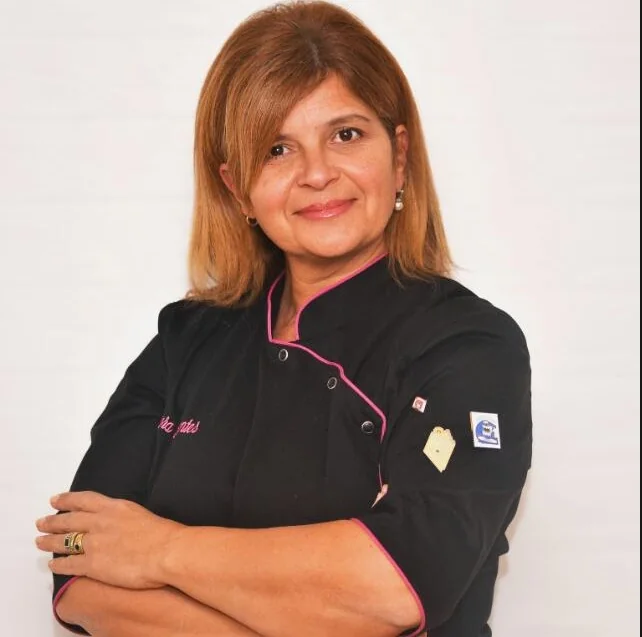
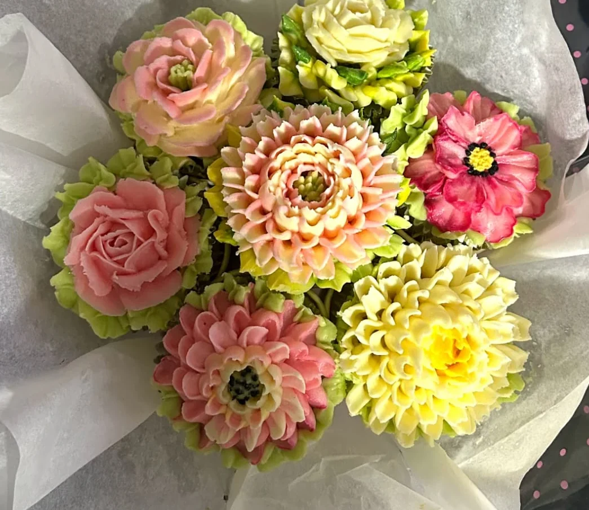
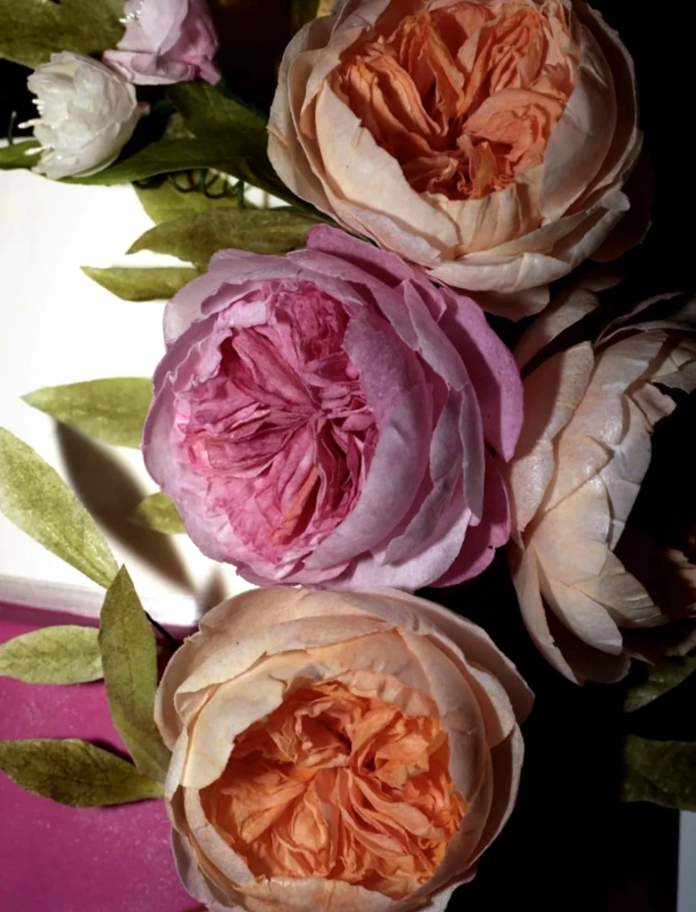
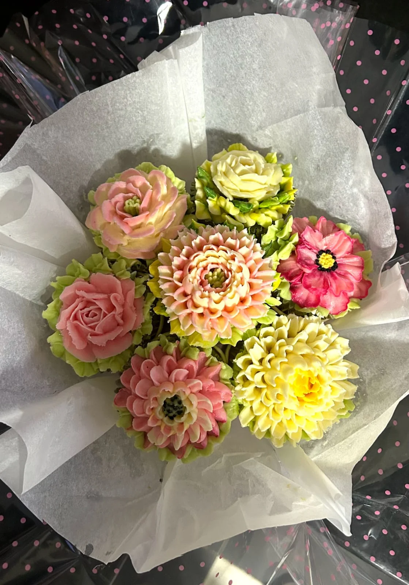
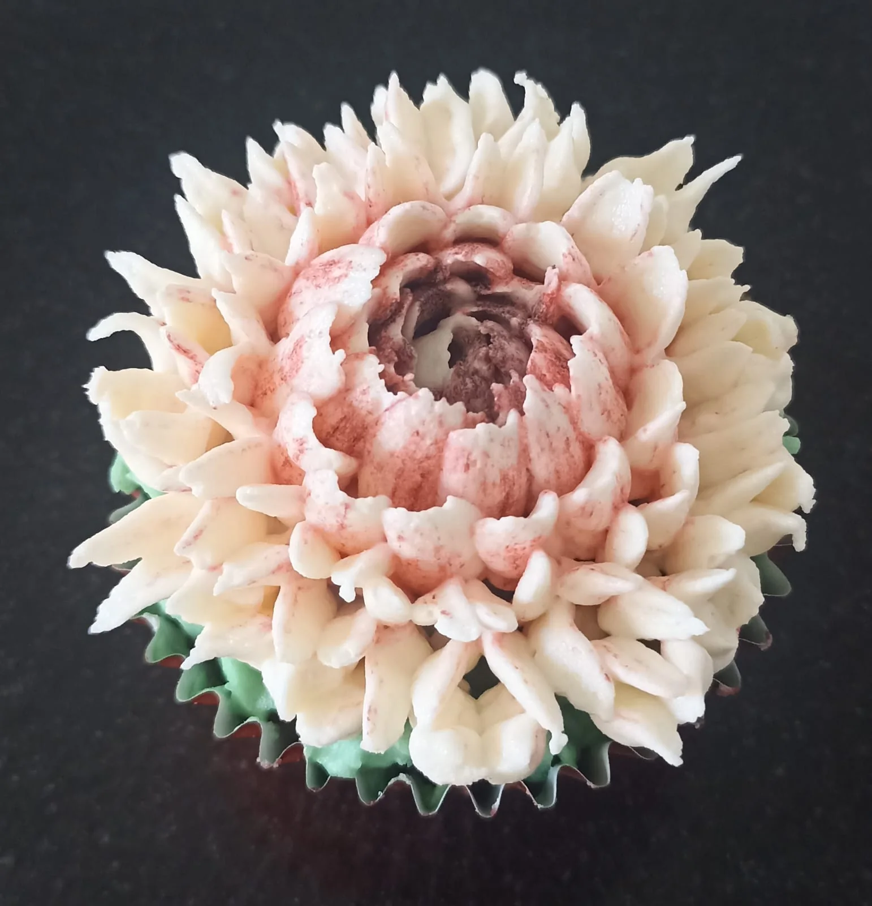
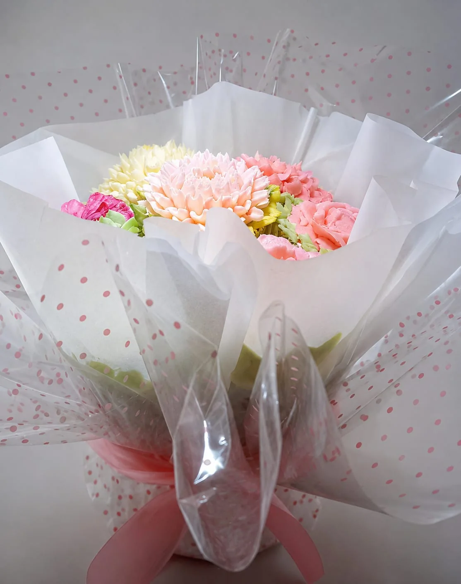

Domingo 28 de junio de 2026 · Salto
Arte floral en papel de arroz y buttercream
Un seminario presencial demostrativo y participativo para aprender flores delicadas, comestibles y visualmente impactantes para tortas, cupcakes y mesas dulces. Vas a crear tus propias flores durante la jornada.
10 a 20:30 hs
Hotel Salto Casino
Demostrativo + práctico
Creás tus propias flores
Materiales incluidos



Una jornada para transformar técnica en detalle
Vas a trabajar con dos universos complementarios: la precisión comestible del buttercream y la delicadeza del papel de arroz. La propuesta combina práctica, demostración y criterio decorativo para que cada flor tenga volumen, color y una terminación profesional.
Qué vas a aprender
Técnicas pensadas para sumar impacto, sutileza y un acabado elegante a tortas y cupcakes sin perder practicidad.
Bouquet en buttercream
Elaboración participativa de un bouquet de flores sobre cupcakes, trabajando pétalos, texturas, tonos y composición.
Papel de arroz
Creación de una flor ANÉMONA con un material liviano, versátil y delicado, ideal para lograr movimiento y transparencias.
David Austin y cobertura
Demostración de la flor David Austin y cobertura de una torta real con buttercream para integrar técnica y montaje.
Aprendé con profesionales que viven este oficio
Laura y Flavia guían la jornada desde la experiencia práctica, el detalle visual y el oficio de la decoración aplicada a pastelería.

Laura Fuentes
Decoradora de tortas y docente con más de 30 años de oficio. Su trabajo une técnica, creatividad y calidad artesanal para transformar cada torta en una pieza única, con identidad propia y terminaciones de alto nivel.
Flavia Pereira
Pastelera, decoradora y creadora de proyectos gastronómicos con 12 años de experiencia, además de fundadora de Macaron.uy. En Flavia Redulce muestra su trabajo en pastelería, y en Redulce Recetas comparte recetas fáciles, ricas y testeadas para simplificar la cocina del día a día.
La parte práctica
Estas son las piezas que realizarán las alumnas durante el taller: una flor ANÉMONA en papel de arroz y un bouquet de flores en buttercream sobre cupcakes. El resto de las técnicas se verá en demostración.
Participativo
ANÉMONA
Una flor liviana y expresiva en papel de arroz, ideal para sumar movimiento, transparencia y un punto artístico a cualquier torta.

Participativo
Bouquet en buttercream
Cada alumna realiza un bouquet de flores comestibles, trabajando pétalos, volumen, tonos y composición sobre cupcakes.
Trabajos que vas a ver y realizar
Flores de papel de arroz, bouquets en buttercream y detalles comestibles con acabado de pieza artística.




Reservá tu lugar en el taller
Al tocar el botón vas a poder elegir la jornada completa o reservar uno de los dos talleres por separado. El taller incluye todos los materiales y combina demostración con práctica real.